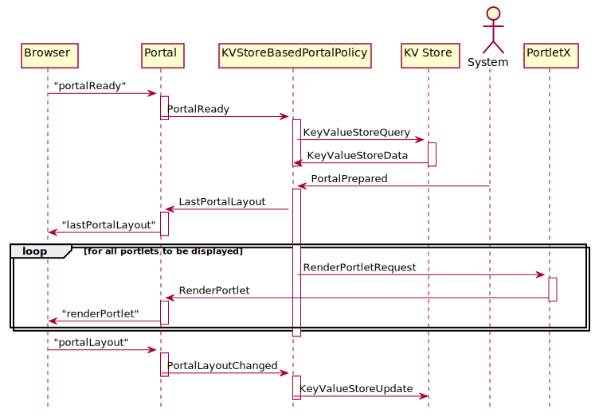

public class KVStoreBasedPortalPolicy extends org.jgrapes.core.Component
A component that restores the portal layout, using key/value events for persisting the data between sessions.

This component requires another component that handles the key/value
store events (KeyValueStoreUpdate, KeyValueStoreQuery)
used by this component for implementing persistence. When the portal becomes
ready, this policy sends a query for the persisted data. To ensure
that the data is available before the boot sequence continues, the
completion of the PortalReady event is delayed (using a
CompletionLock) until the requested data becomes available.
When the portal has been prepared, the policy sends the last layout as retrieved from persistent storage to the portal and then generates render events for all portlets contained in this layout.
Each time the layout is changed in the portal, the portal sends the new layout data and this component updates the persistent storage accordingly.
| Constructor and Description |
|---|
KVStoreBasedPortalPolicy()
Creates a new component with its channel set to
itself.
|
KVStoreBasedPortalPolicy(org.jgrapes.core.Channel componentChannel)
Creates a new component with its channel set to the given channel.
|
| Modifier and Type | Method and Description |
|---|---|
void |
onKeyValueStoreData(org.jgrapes.util.events.KeyValueStoreData event,
PortalSession channel) |
void |
onPortalLayoutChanged(PortalLayoutChanged event,
PortalSession channel) |
void |
onPortalPrepared(PortalPrepared event,
PortalSession channel) |
void |
onPortalReady(PortalReady event,
PortalSession channel)
Intercept the
PortalReady event. |
channel, component, defaultCriterion, isEligibleForactiveEventPipeline, addHandler, attach, children, componentVertex, detach, fire, initComponentsHandlers, iterator, newEventPipeline, newEventPipeline, newSyncEventPipeline, parent, registerAsGenerator, root, toString, unregisterAsGeneratorpublic KVStoreBasedPortalPolicy()
Creates a new component with its channel set to itself.
public KVStoreBasedPortalPolicy(org.jgrapes.core.Channel componentChannel)
Creates a new component with its channel set to the given channel.
componentChannel - @Handler public void onPortalReady(PortalReady event, PortalSession channel) throws java.lang.InterruptedException
Intercept the PortalReady event. Request the
session data from the key/value store and resume.
event - channel - java.lang.InterruptedException@Handler public void onKeyValueStoreData(org.jgrapes.util.events.KeyValueStoreData event, PortalSession channel) throws org.jdrupes.json.JsonDecodeException
org.jdrupes.json.JsonDecodeException@Handler public void onPortalPrepared(PortalPrepared event, PortalSession channel)
@Handler public void onPortalLayoutChanged(PortalLayoutChanged event, PortalSession channel)